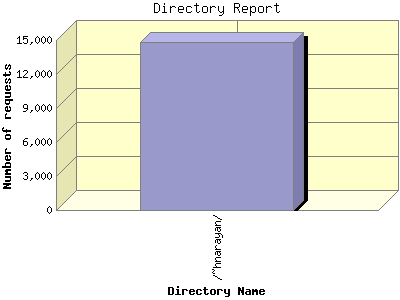

Report generated by Analog 5.91beta1 and Report Magic 2.21
|
Web Server Statistics for "Harish Narayanan (hnarayan) - December 2003" Report generated by Analog 5.91beta1 and Report Magic 2.21 |
The Directory Report analyzes accesses to this web site's directories. This information can be useful in determining the most requested areas.
This report shows all results. This report is sorted by number of requests.

| Directory Name | Number of requests | Percentage of the bytes | |
|---|---|---|---|
| 1. | /~hnarayan/ | 14,837 | 100.00% |
| /~hnarayan/site/ | 14,607 | 98.90% | |
| /~hnarayan/site/images/ | 9,348 | 62.07% | |
| /~hnarayan/site/images/Favs/ | 1,889 | 6.55% | |
| /~hnarayan/site/images/smileys/ | 1,031 | 0.20% | |
| /~hnarayan/site/images/icons/ | 30 | 0.01% | |
| /~hnarayan/site/Photos/ | 84 | 6.92% | |
| /~hnarayan/site/logs/ | 143 | 4.53% | |
| /~hnarayan/site/usnews_images/ | 2,567 | 1.78% | |
| /~hnarayan/cgi-data/ | 222 | 1.10% | |
| /~hnarayan/cgi-data/images/ | 55 | 0.01% | |
| /~hnarayan/cgi-data/images/smileys/ | 55 | 0.01% | |
This report was generated on January 18, 2004 18:32.
Report time frame December 1, 2003 00:20 to December 31, 2003 23:49.
| Web statistics report produced by: | |
 Analog 5.91beta1 Analog 5.91beta1 |  Report Magic 2.21 Report Magic 2.21 |